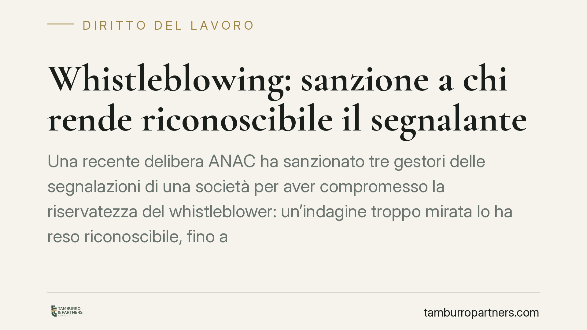

Whistleblowing: sanzione a chi rende riconoscibile il segnalante
Una recente delibera ANAC ha sanzionato tre gestori delle segnalazioni di una società per aver compromesso la riservatezza del whistleblower: un'indagine troppo mirata lo ha reso riconoscibile, fino al licenziamento ritorsivo. La decisione chiarisce che l'identità può essere tradita anche senza divulgare il nome, e colpisce le persone fisiche responsabili del canale.

Il caso
Una recente delibera dell'Autorità Nazionale Anticorruzione (ANAC) ha sanzionato con una somma rilevante ciascuno dei tre soggetti incaricati della gestione delle segnalazioni interne di una società. La contestazione: aver violato l'obbligo di riservatezza sull'identità del segnalante.
Il punto centrale è questo. L'identità del whistleblower non era stata divulgata direttamente. È stata però l'impostazione dell'accertamento a renderlo riconoscibile: un'indagine circoscritta a pochi fatti noti solo a quella persona ha permesso di risalire a lei. L'esito è stato un licenziamento con caratteri ritorsivi.
L'insegnamento è netto: la riservatezza può essere compromessa anche senza pronunciare il nome del segnalante. Conta il risultato, non la forma della condotta.
Inquadramento normativo
La disciplina è contenuta nel D.lgs. 24/2023, che ha recepito nell'ordinamento italiano la Direttiva UE 2019/1937 sulla protezione delle persone che segnalano violazioni.
L'art. 12 del decreto impone l'obbligo di riservatezza sull'identità del segnalante. Tale identità, e ogni informazione da cui possa desumersi, non può essere rivelata senza il consenso espresso della persona, salvo le eccezioni tassative previste dalla norma. L'obbligo grava su chiunque riceva o gestisca la segnalazione, anche in via incidentale.
Il divieto di atti ritorsivi è invece disciplinato dall'art. 17. La stessa disposizione prevede un'agevolazione probatoria a favore del segnalante: una volta dimostrata la segnalazione e il pregiudizio subito, spetta al datore di lavoro provare che la misura adottata (ad esempio il licenziamento) si fonda su ragioni estranee alla segnalazione. È un'inversione sostanziale dell'onere della prova.
Sul piano sanzionatorio, l'ANAC può colpire sia la violazione della riservatezza sia l'adozione di ritorsioni, agendo direttamente sulle persone fisiche responsabili e non solo sull'ente.
Implicazioni pratiche
La prima implicazione riguarda la doppia esposizione. La violazione genera responsabilità in capo alla persona fisica che gestisce il canale — il gestore delle segnalazioni — e, distintamente, in capo all'ente che non ha garantito un sistema adeguato. Chi opera come gestore risponde in proprio: non è schermato dalla struttura societaria.
La seconda riguarda il collegamento con il D.lgs. 231/2001. Il canale di whistleblowing è parte integrante del modello di organizzazione, gestione e controllo. Una gestione che espone il segnalante segnala un modello mal funzionante. In caso di procedimento a carico dell'ente, l'idoneità del modello può essere messa in discussione proprio a partire da queste falle, con ricadute sulla possibilità di escludere la responsabilità amministrativa.
La terza riguarda il metodo di accertamento. L'obbligo di verificare la segnalazione non può tradursi in un'indagine che, per come è costruita, punta un faro sul segnalante. L'accertamento va condotto allargando il perimetro, evitando che la ricostruzione dei fatti coincida con la cerchia ristretta di chi poteva conoscerli.
Cosa fare in concreto
- Separate i ruoli: distinguete chi riceve la segnalazione da chi conduce l'accertamento, limitando al minimo i soggetti che accedono all'identità del segnalante.
- Pseudonimizzate i dati: trattate la segnalazione mascherando ogni elemento identificativo prima di avviare le verifiche interne.
- Ampliate il perimetro dell'indagine: evitate accertamenti circoscritti a fatti noti a una sola persona; inserite riscontri incrociati che non espongano il segnalante.
- Documentate le ragioni delle misure: quando si adotta un provvedimento verso un dipendente che ha segnalato, è opportuno ricostruire per iscritto e in anticipo le motivazioni estranee alla segnalazione, in funzione dell'inversione dell'onere della prova.
- Verificate la tenuta del modello 231: sottoponete procedure e canale a un audit periodico, accertando che la gestione concreta rispetti la riservatezza richiesta dalla legge.
La decisione dell'ANAC conferma un principio operativo: la protezione del segnalante si misura sugli effetti delle condotte, non sulle buone intenzioni. Un canale formalmente conforme ma gestito in modo da esporre chi segnala non tutela nessuno — né la persona, né l'ente.
---
Contributo informativo a cura di Tamburro & Partners - Avv. Giuseppe Tamburro. Non costituisce parere legale.
Ogni storia di lavoro ha i suoi tempi.
Se gestisci HR e vuoi un confronto su contenzioso, ispezioni o licenziamenti, scrivi allo studio. Ti rispondiamo entro un giorno lavorativo.